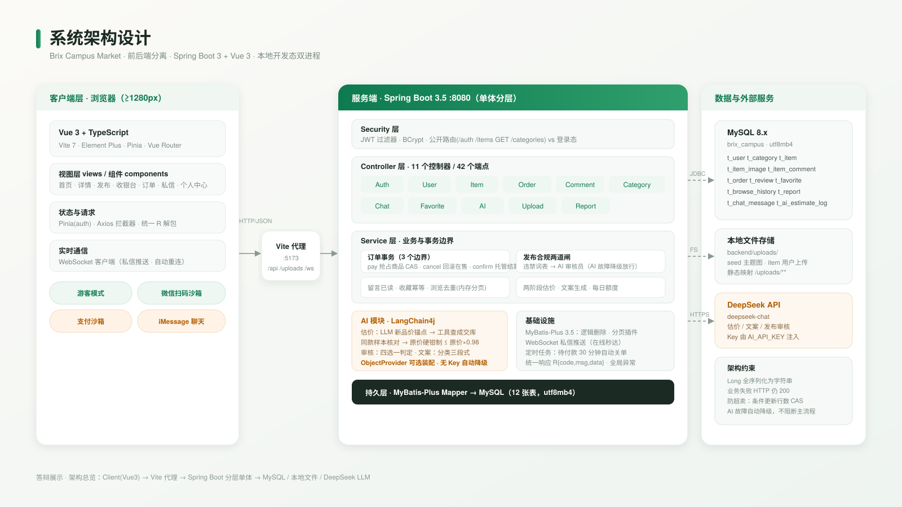
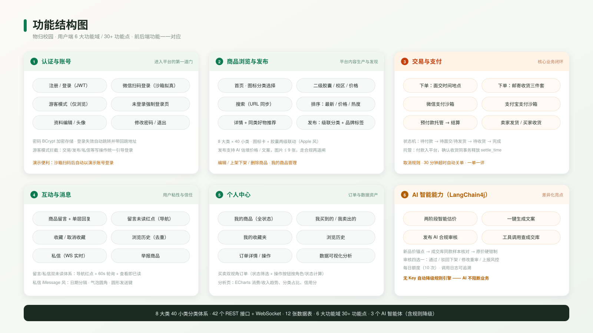
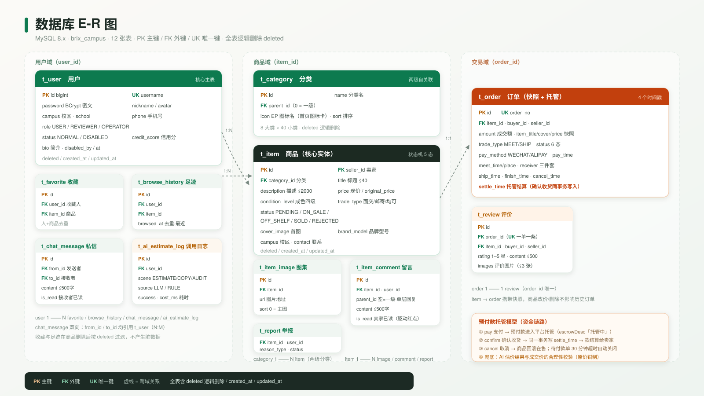
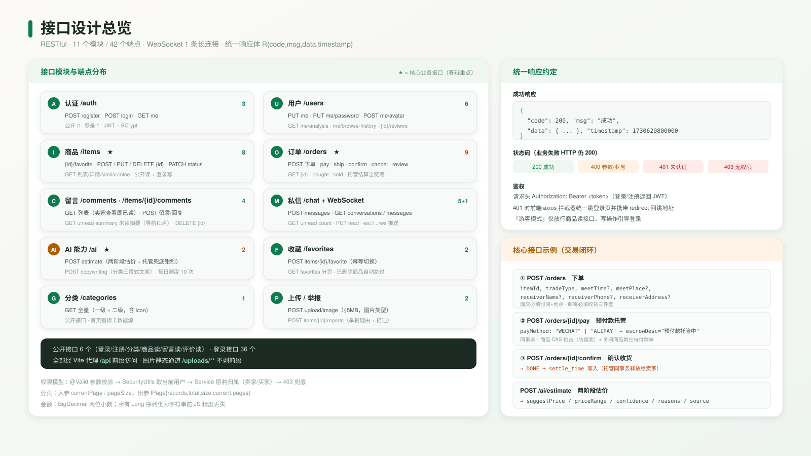

4 张矢量图 + 同名 PNG 位图 · 建议插入 PPT 时优先用 SVG（矢量不失真、可改色），PNG 用于快速粘贴
architecture.svg 等 SVG 文件进 PowerPoint 幻灯片（Office 2016+ 支持，右键「转换为形状」可改文字颜色）；
② 或使用同名 PNG（1600×900，投影清晰）；③ 答辩顺序建议：架构图 → 功能结构图 → E-R 图 → 接口总览；
④ 页面本身可直接 Ctrl+P 导出 PDF 作为备用讲稿附件。



